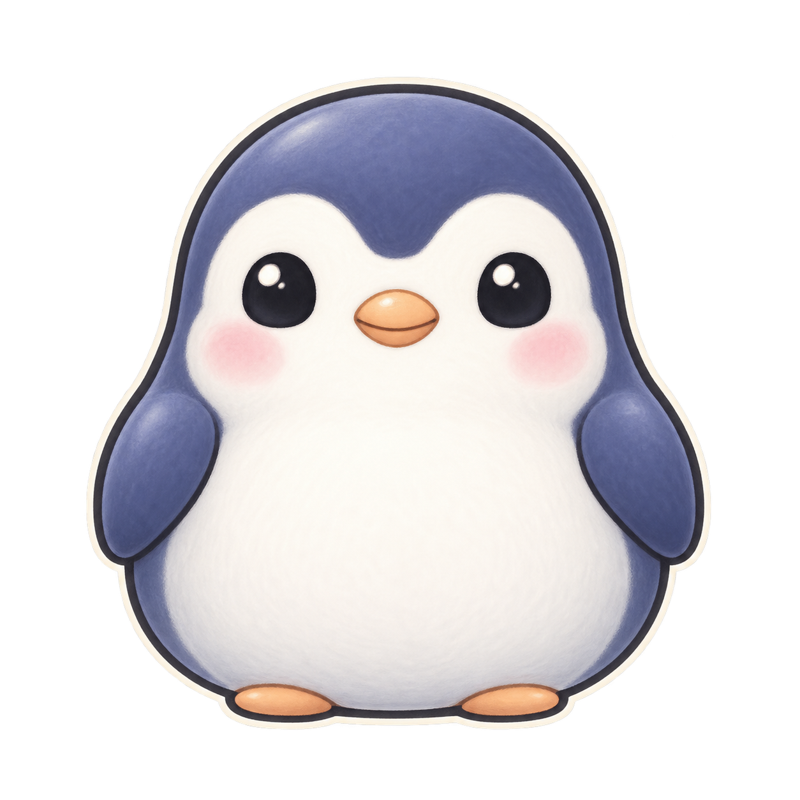
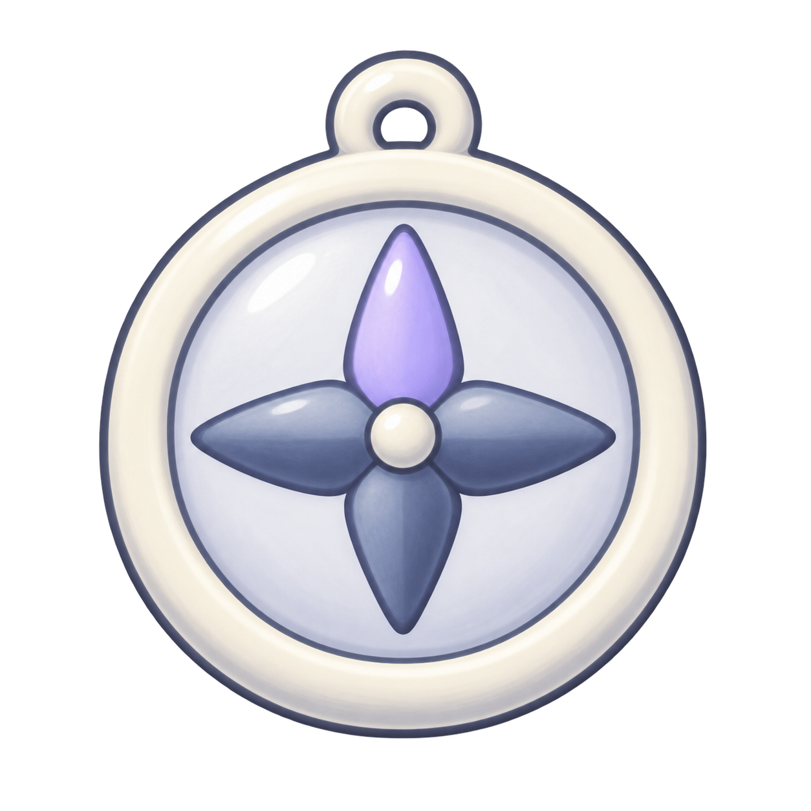
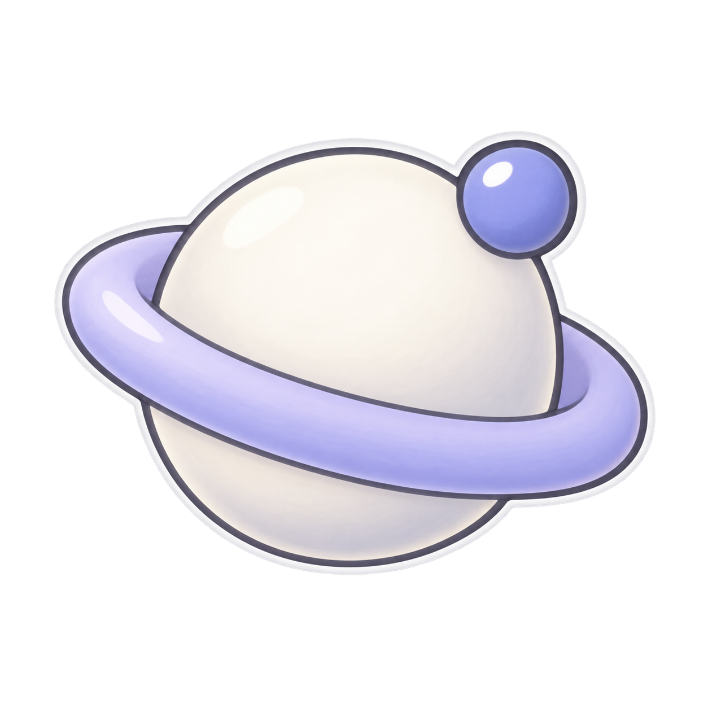

01 · 月兔原图观察与判断16 / 32 / 4816 / 32 / 481254 × 1254 原图配色与 Chrome 文件soft ivory #E7E7EB, lilac #A4A8E8, indigo accent #737BDD128px PNG · 配置片段
02 · 蝾螈原图灵活切换与操作16 / 32 / 4816 / 32 / 481254 × 1254 原图配色与 Chrome 文件powder mauve #D6C7E3 and muted lavender #929BDD, cream face #F1EAD9128px PNG · 配置片段
03 · 企鹅原图专注与整洁16 / 32 / 4816 / 32 / 481254 × 1254 原图配色与 Chrome 文件deep indigo #545D94, porcelain #E7E7EB, restrained muted peach beak128px PNG · 配置片段
04 · 蜗牛原图回放中的耐心与节奏16 / 32 / 4816 / 32 / 481254 × 1254 原图配色与 Chrome 文件cream #E7E7EB, lavender shell #ADB1E9, indigo spiral #737BDD128px PNG · 配置片段
05 · 蝠鲼原图沉浸与顺畅控制16 / 32 / 4816 / 32 / 481254 × 1254 原图配色与 Chrome 文件muted slate blue #889BCC, cream #E7E7EB, lilac accent #737BDD128px PNG · 配置片段
06 · 罗盘原图图表导航与方向16 / 32 / 4816 / 32 / 481254 × 1254 原图配色与 Chrome 文件porcelain #E7E7EB, indigo #737BDD, dark blue-gray #42475F128px PNG · 配置片段
07 · 沙漏原图回放与时间管理16 / 32 / 4816 / 32 / 481254 × 1254 原图配色与 Chrome 文件lavender #9FA5E2, cream #EFE9D9, muted warm sand #D1BE92128px PNG · 配置片段
08 · 望远镜原图观察结构与聚焦16 / 32 / 4816 / 32 / 481254 × 1254 原图配色与 Chrome 文件ivory #E7E7EB, lilac #A4ABE5, deep indigo lenses #42475F128px PNG · 配置片段
09 · 烛光精灵原图专注与陪伴16 / 32 / 4816 / 32 / 481254 × 1254 原图配色与 Chrome 文件indigo-lilac #929BDD, pale cream #E7E7EB, subdued rose cheeks128px PNG · 配置片段
10 · 轨道星球原图Atlas 全局工作台与关联16 / 32 / 4816 / 32 / 481254 × 1254 原图配色与 Chrome 文件porcelain #E7E7EB, soft lilac #A4ABE5, indigo #737BDD128px PNG · 配置片段